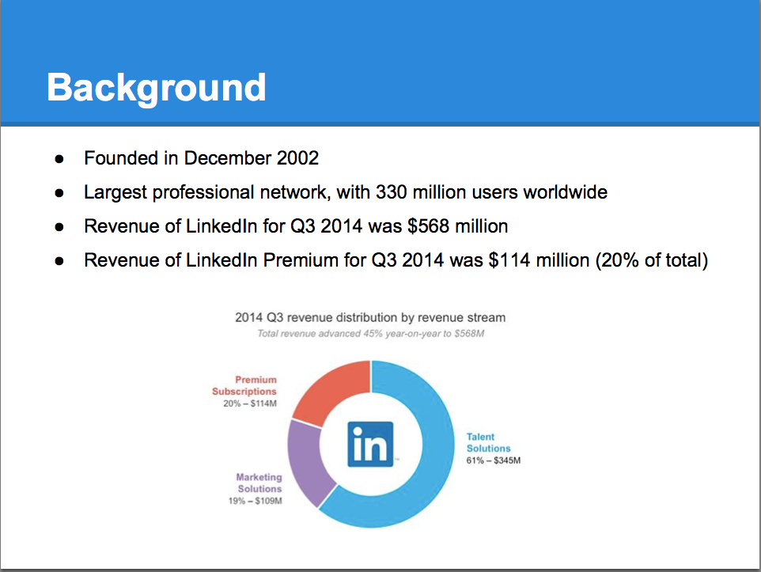
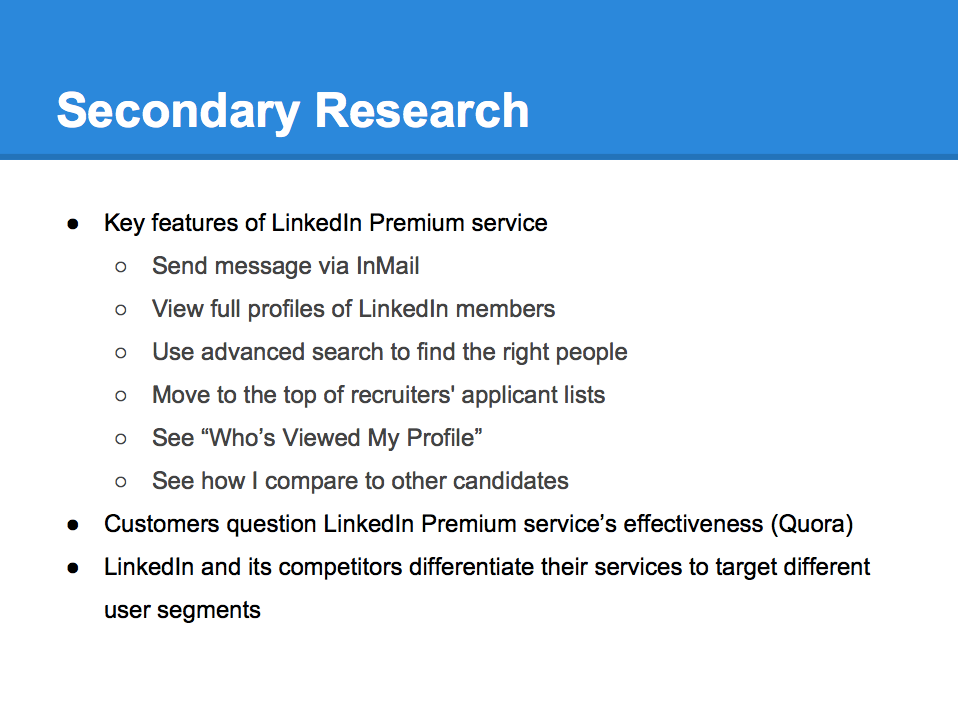
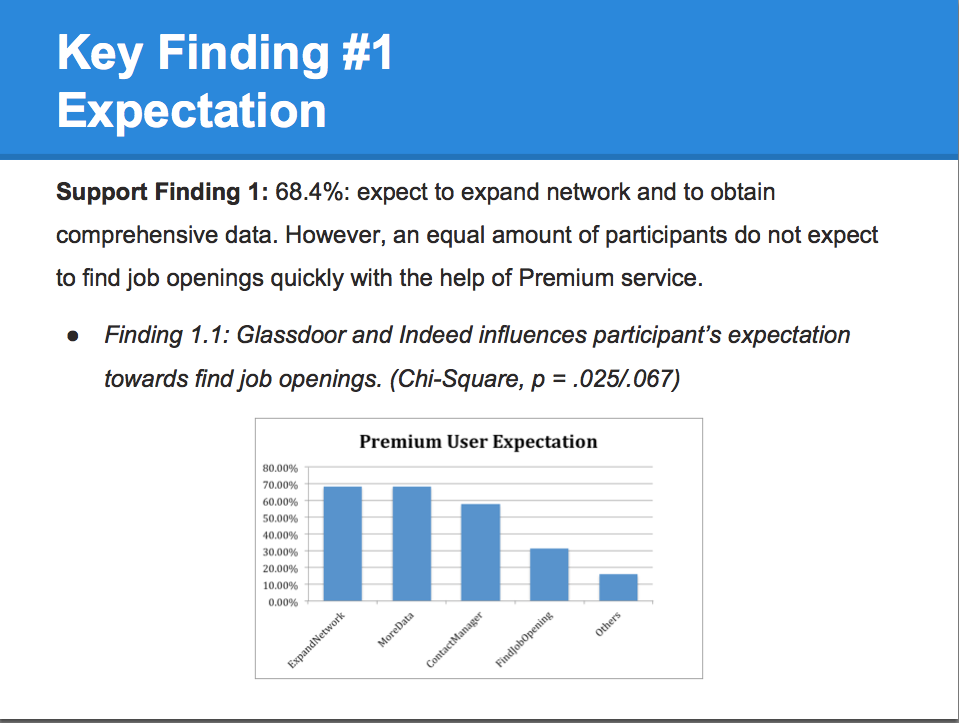
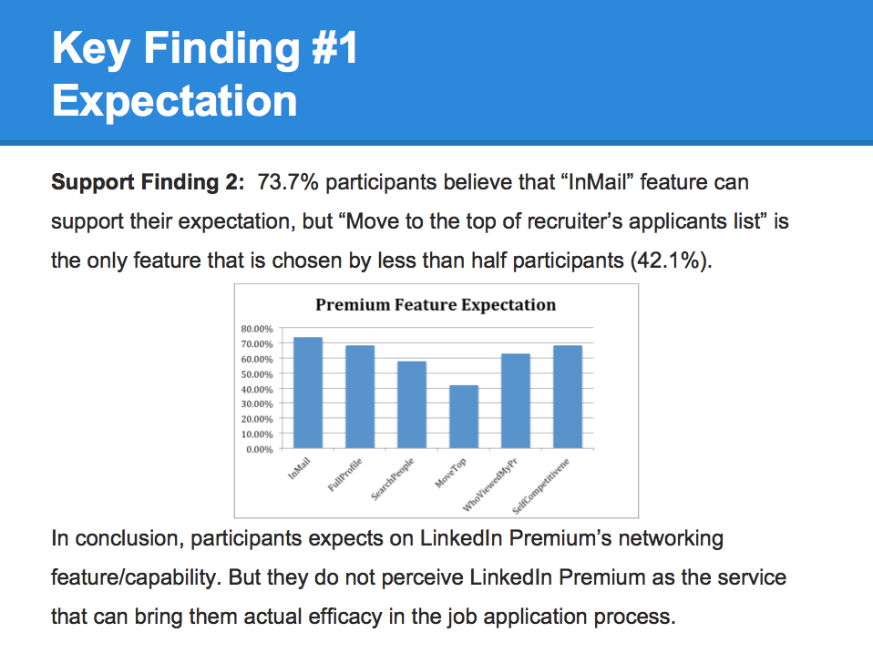
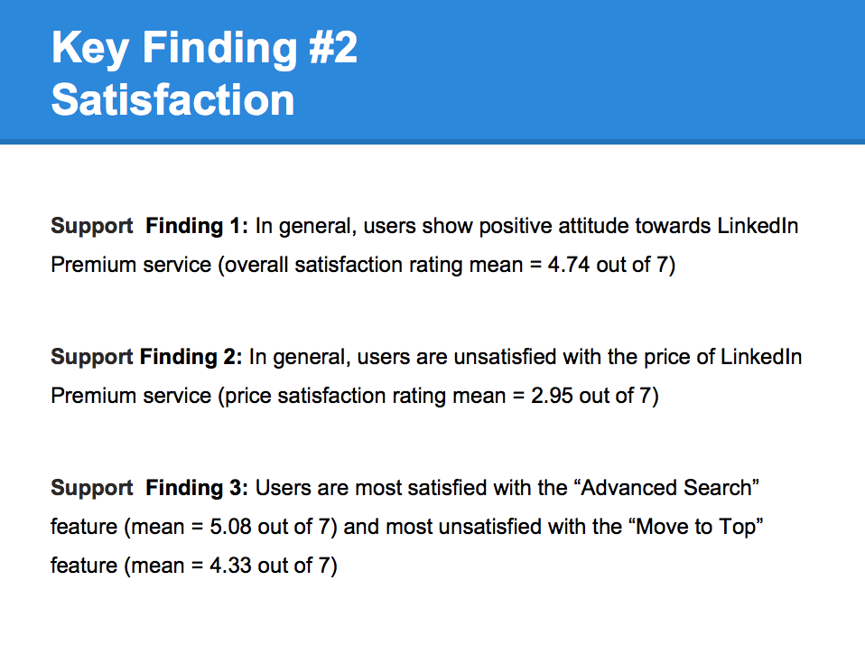
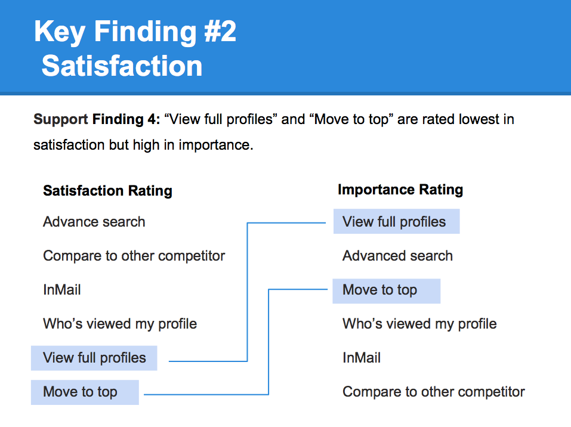
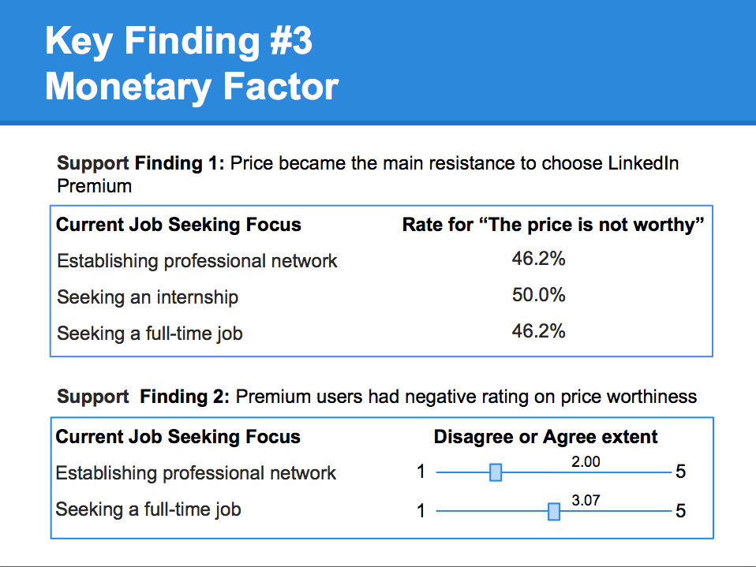
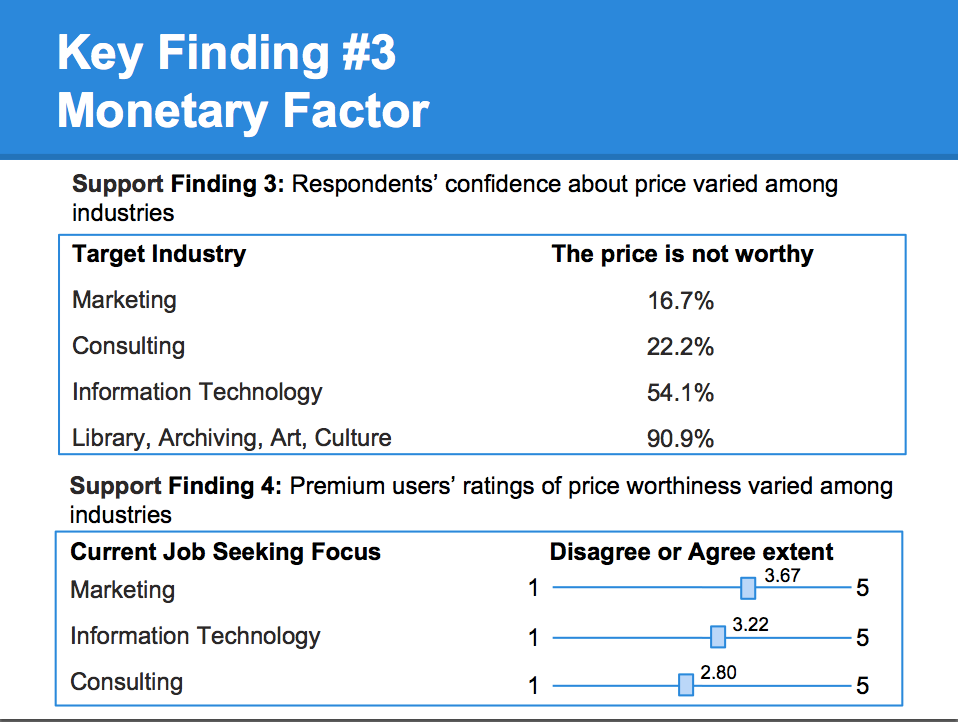
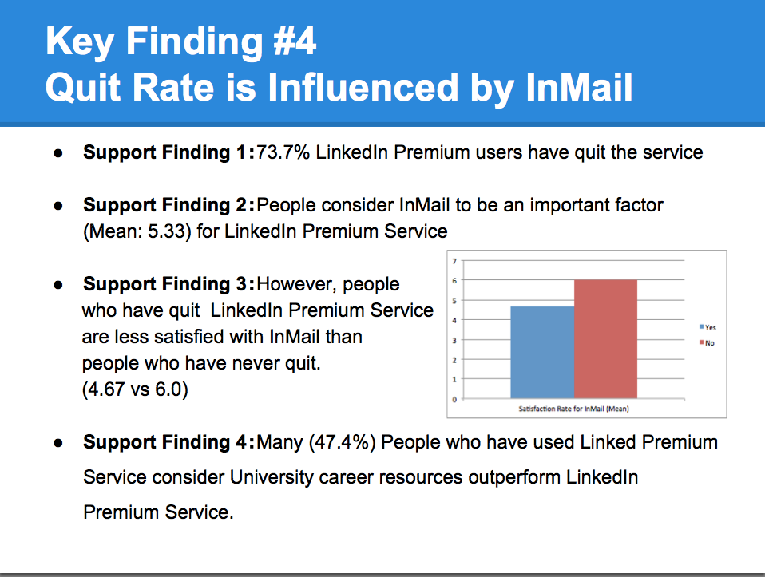

Portofolio of Yichi
LinkedIn Premium Users’ Experience Analysis

Background

Decision Problem
While users are purchasing the LinkedIn Premium service for various reasons, those who resist or cease to do so can be generally divided into two categories – those who tried a paid account but didn’t get enough benefits, and those who already got a job with the service and realized they no longer needed it. It was complained by some who categorize themselves as “Job Seekers” that they did not receive great value from the Premium service because the Premium listing did not automatically move their names to the top of recruiters’ lists.
To help determine whether the LinkedIn Premium product is offering desirable and efficient services to its customers, this project will focus on understanding job seekers’ experience with the LinkedIn Premium service. Furthermore, in our research we’d like to shed more light on the key factors that influence Premium customers’ experience to explore potential improvements for the Premium service. Within the scope of our research, we will limit our study subject to the UM graduate students who are current LinkedIn Premium users instead of the whole LinkedIn folks.
In a single statement, our decision problem is: “How to improve UM graduate students’ job seeking experience with LinkedIn Premium service.”
Research Questions
There are many aspects of the problem to be researched in order to solve the decision problem. The following are the areas of focus for this report.
1. What are customers’ goals/expectations of LinkedIn Premium service?
2. What is current customers’ attitude towards LinkedIn Premium service?
3. What are the driving features of LinkedIn Premium service that make current customers feel so?
3.1 How easy is it for customers to learn to use Premium service?
3.2 What is the utility of Premium service regarding customers’ experience?
3.3 How does pricing influence users’ attitudes?
4. What are some influential factors that lead previous Premium users to quit this service?
5. What are customers’ attitudes towards other job-seeking resources compared with LinkedIn Premium Service?
Secondary Research

Data Analysis
Skills: Survey Design, Stastical Analysis, SPSSWe involved in the entire processes of survey design and conducted data analyses and relatively advanced data analytic techniques (e.g., derivation of ROI-based marketing metrics, conjoint analysis for new product design, factor and cluster analyses for market segmentation). Our goal was to gather first-hand data of users and develop recommendations for the firm on information-based decisions. Results are seperated into five groups: User’s Expectation, Satisfaction, Price, Quit Rate, Competitors.







Conclusion and Recommendation
From the analysis, we draw the following conclusions and propose recommendations based on the conclusions:
To answer the question “what do Premium users expect? ”, we conclude that participants have expectations on LinkedIn Premium’s networking capability. But they do not perceive LinkedIn Premium as the service that can bring them actual efficacy in the job application process. So we recommend LinkedIn to put more emphasis on its network capability and do further research on how to improve its job-seeking capability.
In general, users show positive attitude towards LinkedIn Premium service. However, our results are not confident enough to say that people are satisfied with LinkedIn Premium service, especially when it comes to certain features such as “Move to top” and “View full profiles”, which are also assigned highest importance by users regarding their experience with LinkedIn Premium service. Based on the conclusions, we here propose the following recommendations: place top priority on “View full profiles” and “Move to the top of recruiters’ list” when seeking to improve the LinkedIn Premium service. Moreover, further research should be conducted to elaborate on specific areas to improve in those two features. For example, focus groups and in-depth interviews with LinkedIn Premium customers can be carried out to collect user feedback and suggestions on the two features. LinkedIn Premium team may also need to improve their support assistance in order to let users feel easier to find help when needed.
Overall, users’ satisfaction of price worthiness is low. No matter respondents’ LinkedIn premium using histories, no matter respondents’ job seeking focusing, they all somewhat felt unsatisfied about the price. However, respondents’ confidence about price varied among industries. Respondents who focus on business industry had more confidence and positive ratings on the LinkedIn Premium price worthiness. We assume that LinkedIn premium might be a better networking platform for business job seekers than others like library or art job seekers. We recommend LinkedIn to research more on what is a better affordable Premium price for customers in order to attract more users and improve users’ price satisfaction, for example using conjoint analysis. Also, focus more on those segments that don't have enough confidence on LinkedIn Premium, like by using factor analysis.
Moreover, users’ quit rate is quite high. And this is most influenced by users’ job-seeking status and their financial situation. However, we can still improve InMail service to better meet UM graduate students’ needs to lower the quitting rate. One direction is to learn from the advantages of University career resources to provide more direct and effective connections between students and recruiters.
Our group